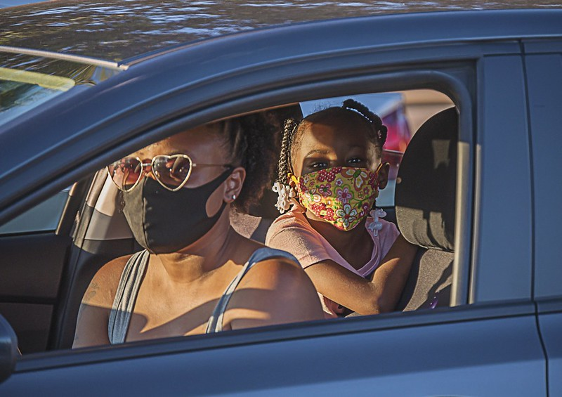
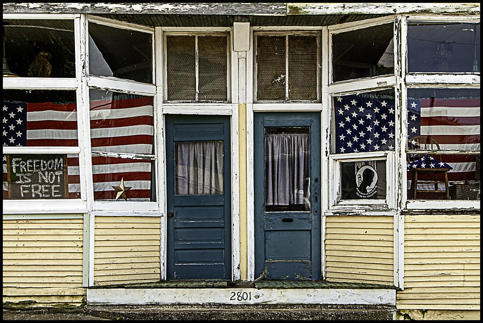
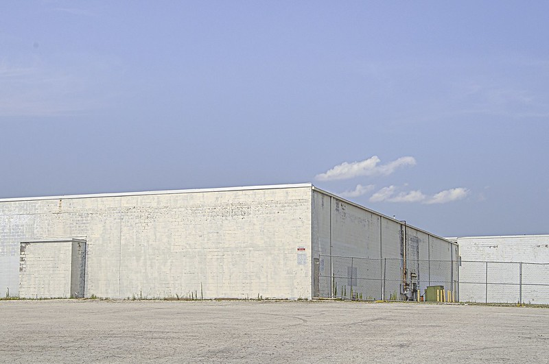
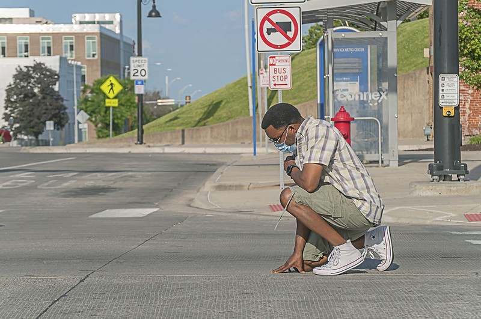
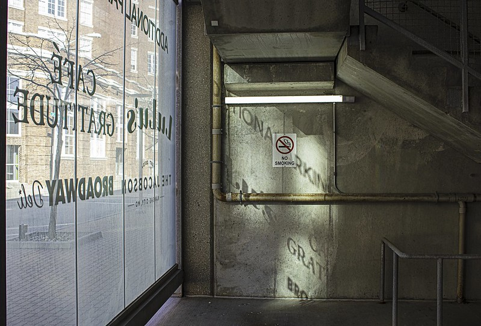

hib<!DOCTYPE html>
<html lang="en-US">
  <head>
    <meta charset="UTF-8">
        <meta name="viewport" content="width=device-width, initial-scale=1.0">
        <meta http-equiv="X-UA-Compatible" content="ie=edge">
        <link rel="stylesheet" href="https://use.typekit.net/iuk3xss.css">
        <style>
          @import url('https://fonts.googleapis.com/css2?family=Jost:wght@100;200;300&display=swap');
        </style>
        <link rel="stylesheet" href="css/style.css">
        <link rel="shortcut icon" type="image/png" href="img/favicon.png">
    <title>JoLynne Walz Martinez | Photography</title>
  </head>
  <body>
    <header class="header-home">
      <h1 class="page-title">JoLynne Walz Martinez | Photography</h1>
      <nav class="navbar">
        <a href="#home" class='active-page'>Home</a>
        <a href="about.html" class="nav-link">Exhibitions</a>
        <a href="mailto:jolynnemartinez@gmail.com" class="nav-link">Contact</a>
      </nav>
    </header>
    <main>
      <section class="gallery">
          <figure class="item1">
              
          </figure>
          <figure class="item2">
              
          </figure>
          <figure class="item3">
              
          </figure>
          <figure class="item4">
              
          </figure>
          <figure class="item5">
              
          </figure>
          <figure class="item6">
              
          </figure>
          <figure class="item7">
            
          </figure>
          <figure class="item8">
            
          </figure>
        </section>
    </main>
  <footer>
    <p>&copy; JoLynne Walz Martinez</p>
  </footer>
  </body>
</html>
